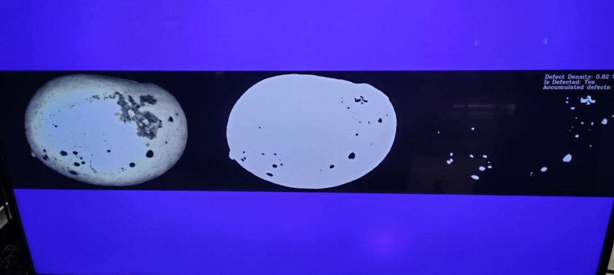
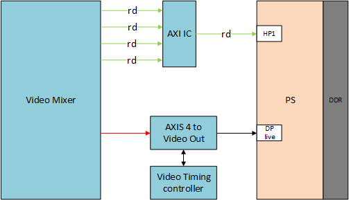

Kria™ KV260 Vision AI Starter Kit Defect Detection Tutorial |
System Architecture of the Platform |
Architecture Diagram¶
The following figure illustrates the system architecture of the SOM Defect Detection application.

GStreamer Pipeline Changes¶
Gstreamer provides a simple and effective method to construct media pipelines. Since this example design leverages Gstreamer, the designer can easily modify the provided pipeline to tailor it to the needs of their specific application.
Deployment¶
This reference design includes a pre-packaged SD card image to provide user-friendly out-of-box experience for the Vision Defect Detection Starter Kit. This image should be used first to verify hardware setup and also to demonstrate the capabilities of the SOM. Each of the application examples provided with the kit are delivered as an RPM package group for ease of installation and deployment.
In addition to pre-build SD card image, the design source files are also provided to allow customization. The Building the Design components page documents in detail all the different design sources and steps to re-build the SD card image from scratch, including the Vivado block design, Vitis platform, and the PetaLinux project.
The end applications leverage custom Gstreamer plugins for Vitis Vision libraries built using the IVAS framework. These plugins leverage the following libraries:
| Deliveries | Type | Definition |
|---|---|---|
| libivas_preprocess.so | Kernel Library | Linking Vitis Vision library to do threshold binary along with filtering to remove the salt and pepper noise for defect detection. |
| libivas_canny_edge.so | Kernel Library | Linking Vitis Vision library to the Canny edge detector is an edge detection operator that uses a multi-stage algorithm to detect a wide range of edges in images. |
| libivas_edge_tracer.so | Kernel Library | Linking Vitis Vision library to trace the edge for defect calculation. |
| libivas_defectcalc.so | Kernel Library | Linking OpenCV software library to find the contour, fill the contour, and embed text as result into output images. |
| defect-detect | Application Executable | Executable to invoke the whole application with options to choose a source, width, height, framerate and configuration file path, and other parameters. |
| ____ |
Display Pipeline¶
To support multiple video streams to be displayed on a 4k monitor, the following solution is explored. The three images from various stages are of size 1280 x 800. These images are mixed with a background image of 4k. The PS print the display results on the background image. The following figure shows an example background and layout. This is the sample output display for defect detection on a monitor.
The 4K Monitor displays the following outputs:
1. File Image (output belongs to input GRAY8 data that comes from the file source)
2. Binary Image (output belongs to pre-processed pipeline where Vitis Vision library threshold function can perform the thresholding operation on the input image and the Median blur filter acts as a non-linear digital filter that improves noise reduction)
3. Contour Filling with Embedded Text Image (output belongs to the defected portions along with the defect results)
The Contour Filling image along with its embedded text contains:
Defect Density (amount of defected portion)
Defect Decision (Is Defected: Yes/No)
Accumulated Defects
Defect Density and Defect Decision is obtained from the Defect Calculation library.
For a given set of test images, manually calculate accuracy as follows:
Each image in the test is pre-labeled by a human. The label indicates if the mango in the image is defected or not.
The pre-labeled result of the human is compared with the result given by the Vision SOM Defect Detection system. The number of images that are not detected correctly is found.
The ratio of the number of images that are not detected correctly to the total number of images in the test, is the accuracy of the Defect Detection system.
Accumulated defects is the number of defects detected in a certain period of time.

Note: The test mango image is taken from COFILAB.
In the PL, the video mixer IP reads the video streams (three images + base layer) from memory and streams it into the DP/HDMI port. AXI-Stream conversion to native video is done using AXI4-Stream to Video IP and Video Timing controller IP.
The video mixer IP workflow is as follows.

Platform¶
DP Tx Display¶
Click here to view details
Linux kernel and user-space frameworks for display and graphics are intertwined and the software stack can be quite complex with many layers and different standards/APIs. On the kernel side, the display and graphics portions are split with each having their own APIs. However, both are commonly referred to as a single framework, namely DRM/KMS. This split is advantageous, especially for SoCs that often have dedicated hardware blocks for display and graphics. The display pipeline driver responsible for interfacing with the display uses the kernel mode setting (KMS) API and the GPU responsible for drawing objects into memory uses the direct rendering manager (DRM) API. Both APIs are accessed from user-space through a single device node.

Direct Rendering Manager¶
The Direct Rendering Manager (DRM) is a subsystem of the Linux kernel responsible for interfacing with a GPU. DRM exposes an API that user space programs can use to send commands and data to the GPU. The ARM Mali driver uses a proprietary driver stack that is discussed in the next section. Therefore, this section focuses on the common infrastructure portion around memory allocation and management that is shared with the KMS API.
Driver Features¶
The Xilinx DRM driver uses the GEM memory manager and implements DRM PRIME buffer sharing. PRIME is the cross-device buffer sharing framework in DRM. To user-space, PRIME buffers are DMABUF-based file descriptors. The DRM GEM/CMA helpers use the CMA allocator as a means to provide buffer objects that are physically contiguous in memory. This is useful for display drivers that are unable to map scattered buffers via an IOMMU. Frame buffers are abstract memory objects that provide a source of pixels to scan out to a CRTC. Applications explicitly request the creation of frame buffers through the DRM_IOCTL_MODE_ADDFB(2) ioctls and receive an opaque handle that can be passed to the KMS CRTC control, plane configuration and page flip functions.
Kernel Mode Setting¶
Mode setting is an operation that sets the display mode including video resolution and refresh rate. It was traditionally done in user-space by the X-server that caused several issues due to accessing low-level hardware from user-space, which if done wrong, can lead to system instabilities. The mode setting API was added to the kernel DRM framework, hence the name Kernel Mode Setting. The KMS API is responsible for handling the frame buffer and planes, setting the mode, and performing page-flips (switching between buffers). The KMS device is modeled as a set of planes, CRTCs, encoders, and connectors as shown in the top half of the DP Tx display. The bottom half of that figure shows how the driver model maps to the physical hardware components inside the PS DP Tx display pipeline.
CRTC¶
Click here to view details
CRTC is an antiquated term that stands for Cathode Ray Tube Controller, which today would be simply named display controller as CRT monitors have disappeared and many other display types are available. The CRTC is an abstraction that is responsible for composing the frame to be scanned out to the display and setting the mode of the display. In the Xilinx DRM driver, the CRTC is represented by the buffer manager and blender hardware blocks. The frame buffer (primary plane) to be scanned out can be overlayed and/or alpha-blended with a second plane inside the blender. The DP Tx hardware supports up to two planes, one for video and one for graphics. The z-order (foreground or background position) of the planes and the alpha mode (global or pixel-alpha) can be configured through the driver via custom properties.
The pixel formats of the video and graphics planes can be configured individually at run-time and a variety of formats are supported. The default pixel formats for each plane are set statically in the device tree. Pixel unpacking and format conversions are handled by the buffer manager and blender. The DRM driver configures the hardware accordingly, so this is transparent to the user.
A page-flip is the operation that configures a plane with the new buffer index to be selected for the next scan-out. The new buffer is prepared while the current buffer is being scanned out and the flip typically happens during vertical blanking to avoid image tearing.
Plane¶
Click here to view details
A plane represents an image source that can be blended with or overlayed on top of a CRTC frame buffer during the scan-out process. Planes are associated with a frame buffer to optionally crop a portion of the image memory (source) and scale it to a destination size. The DP Tx display pipeline does not support cropping or scaling, therefore both video and graphics plane dimensions must match the CRTC mode (that is, the resolution set on the display). The Xilinx DRM driver supports the universal plane feature, therefore the primary plane and overlay planes can be configured through the same API. The primary plane on the video mixer is configurable and set to the top-most plane to match the DP Tx pipeline. As planes are modeled inside KMS, the physical hardware device that reads the data from memory is typically a DMA whose driver is implemented using the DMA engine Linux framework. The DPDMA is a 6-channel DMA engine that supports a (up to) 3-channel video stream, a 1-channel graphics stream, and two channels for audio (not used in this design). The video mixer uses built-in AXI master interfaces to fetch video frames from memory.
Encoder¶
An encoder takes pixel data from a CRTC and converts it to a format suitable for any attached connectors. There are many different display protocols defined, such as HDMI or DisplayPort. The PS display pipeline has a DisplayPort transmitter built in. The encoded video data is then sent to the serial I/O unit (SIOU) which serializes the data using the gigabit transceivers (PS GTRs) before it goes out via the physical DP connector to the display. The PL display pipeline uses a HDMI transmitter which sends the encoded video data to the Video PHY. The Video PHY serializes the data using the GTH transceivers in the PL before it goes out via the HDMI Tx connector.
Connector¶
The connector models the physical interface to the display. Both DisplayPort and HDMI protocols use a query mechanism to receive data about the monitor resolution, and refresh rate by reading the extended display identification data (EDID) (see VESA Standard) stored inside the monitor. This data can then be used to correctly set the CRTC mode. The DisplayPort supports hot-plug events to detect if a cable has been connected or disconnected as well as handling display power management signaling (DPMS) power modes.
Libdrm¶
The framework exposes two device nodes per display pipeline to user space: the /dev/dri/card* device node and an emulated /dev/fb* device node for backward compatibility with the legacy fbdev Linux framework. The latter is not used in this design. libdrm was created to facilitate the interface of user space programs with the DRM subsystem. This library is merely a wrapper that provides a function written in C for every ioctl of the DRM API, as well as constants, structures and other helper elements. The use of libdrm not only avoids exposing the kernel interface directly to user space but presents the usual advantages of reusing and sharing code between programs.
Next Steps¶

License¶
Licensed under the Apache License, Version 2.0 (the “License”); you may not use this file except in compliance with the License.
You may obtain a copy of the License at http://www.apache.org/licenses/LICENSE-2.0
Unless required by applicable law or agreed to in writing, software distributed under the License is distributed on an “AS IS” BASIS, WITHOUT WARRANTIES OR CONDITIONS OF ANY KIND, either express or implied. See the License for the specific language governing permissions and limitations under the License.
Copyright© 2021 Xilinx